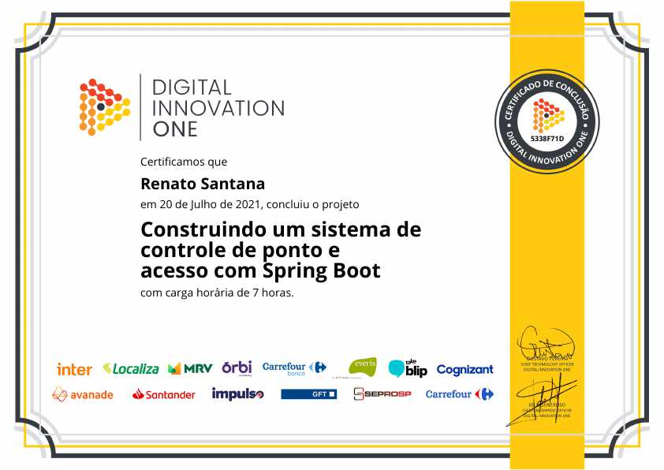

Post #1
Afastado do mercado de TI por conta de um projeto pessoal e familiar, mas com um planejamento de voltar a área integralmente até o final de 2022. Desde o começo desse ano de 2021 estou estudando, revendo e praticando em cursos tudo que conhecia e as novidades. Por esse motivo busco em vagas de até 06h e/ou flexíveis, recolocação no mercado, boas praticas, aprendizado, muita contribuição, empenho e reconhecimento.